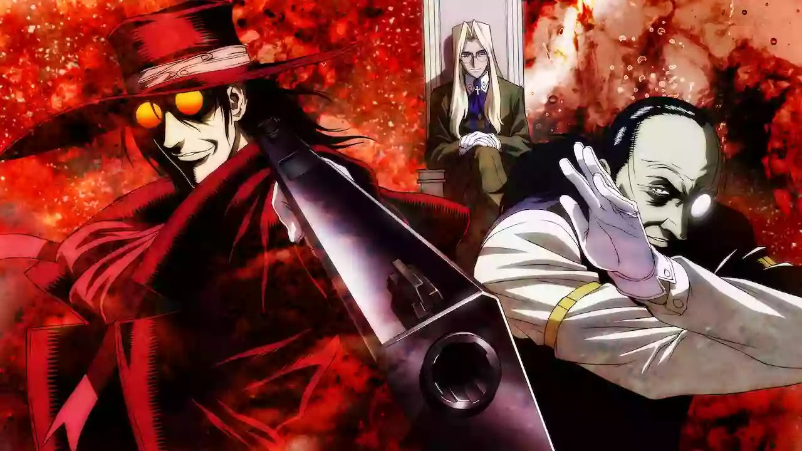

Hellsing is named after and centered around the Royal Order of Protestant Knights originally led by Abraham Van Helsing. The mission of Hellsing is to search for and destroy the undead and other supernatural forces of evil that threaten the queen and the country. This organization is currently led by Sir Integra Fairbrook Wingates Hellsing, who inherited the leadership of Hellsing as a child after the death of her father. She witnessed his death which turned her from a once innocent and shy little girl to a tough and deadly force. She is protected by the faithful Hellsing family butler Walter C. Dornez, a deadly foe in his own right, and Alucard, the original and most powerful vampire, who swore loyalty to the Hellsing family after being defeated by Van Helsing one hundred years before the story takes place. These formidable guardians are joined early on in the storyline by former police officer Seras Victoria, whom Alucard turned into a vampire.
